Imaginative and strategic thinkers, with a plan for everything
The Architect
IntrovertedIntuitiveThinkingJudging
"Strategic, independent, and visionary thinkers who love planning for the future."
Strengths
Rational Thinker
Fact Based
Independent
Goal Oriented
Weaknesses
Arrogant
Dismissive of Emotions
Overly Critical
Socially Clueless
INTP
Innovative inventors with an unquenchable thirst for knowledge.
The Logician
IntrovertedIntuitiveThinkingProspecting
"Logical, curious, and innovative problem-solvers who love exploring ideas and understanding how things work."
Strengths
Analytical
Original
Open-Minded
Curious
Weaknesses
Disconnected
Insensitive
Dissatisfied
Overthinkers
ENTJ
Bold, imaginative, and strong-willed, always finding a way – or making one.
The Commander
ExtravertedIntuitiveThinkingJudging
"Decisive, strategic, and goal-driven visionaries who turn ideas into reality."
Strengths
Efficient
Energetic
Self-Confident
Strong-Willed
Weaknesses
Stubborn
Intolerant
Impatient
Cold and Ruthless
ENTP
Curious and flexible thinkers who cannot resist an intellectual challenge.
The Debater
IntrovertedIntuitiveThinkingProspecting
"Energetic, creative, and curious individuals who love debating ideas."
Strengths
Efficient
Energetic
Self-Confident
Strong-Willed
Weaknesses
Stubborn
Intolerant
Impatient
Cold and Ruthless
DIPLOMATS
INFJ
Quiet and mystical, yet very inspiring and tireless idealists.
The Advocate
IntrovertedIntuitiveFeelingJudging
"Deeply intuitive idealists who seek purpose, meaning, and inner harmony in everything they do."
Strengths
Insightful
Principled
Passionate
Altruistic
Weaknesses
Sensitive to Criticism
Reluctant to Open up
Perfectionistic
Avoiding the Ordinary
INFP
Poetic, kind and altruistic people, always eager to help a good cause.
The Mediator
IntrovertedIntuitiveFeelingProspecting
"Soft-spoken seekers of truth and authenticity, driven by core values and imagination."
Strengths
Empathetic
Generous
Passionate
Idealistic
Weaknesses
Unrealistic
Self-Isolating
Unfocused
Self-Critical
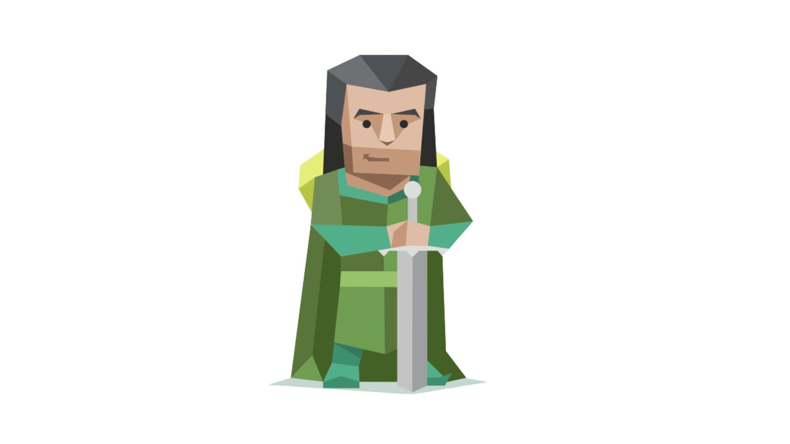
ENFJ
Charismatic and inspiring leaders, able to mesmerize their listeners.
The Protagonist
ExtravertedIntuitiveFeelingJudging
"Charismatic and driven guides who uplift others through vision and empathy."
Strengths
Receptive
Reliable
Altruistic
Charismatic
Weaknesses
Unrealistic
Condescending
Intense
Overly Empathetic
ENFP
Enthusiastic, creative and sociable free spirits, who can always find a reason to smile.
The Campaner
IntrovertedIntuitiveFeelingProspecting
"Free-spirited and passionate idea generators who light up every room with possibilities."
Strengths
Curious
Perceptive
Enthusiastic
Excellent Communicators
Weaknesses
People Pleasing
Unfocused
Disorganized
Overly Optimistic
SENTINELS
ISTJ
Practical and fact-minded individuals, whose reliability cannot be doubted.
The Logistician
IntrovertedObservantThinkingJudging
"Methodical and dependable thinkers who thrive on structure and responsibility."
Strengths
Honest and Direct
Disciplined
Very Responsible
Organized and Effective
Weaknesses
Stubborn
Insensitive
Judgemental
Prone to Burnouts
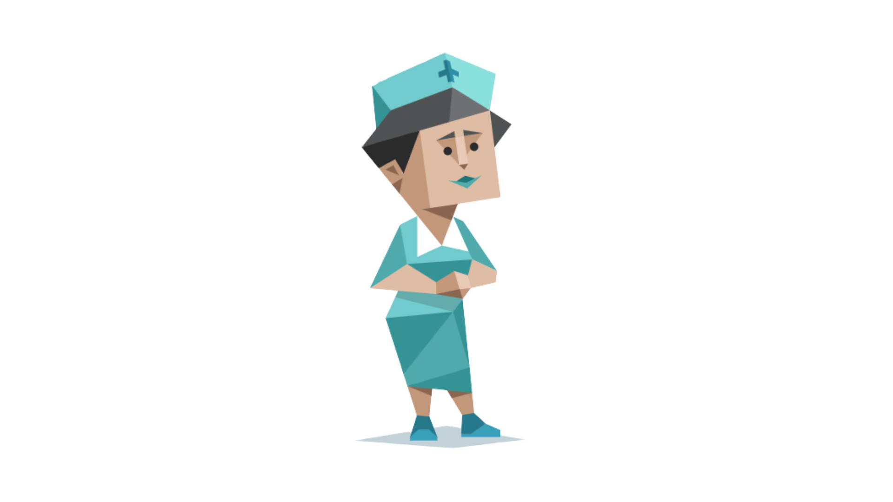
ISFJ
Very dedicated and warm protectors, always ready to defend their loved ones.
The Defender
IntrovertedObservantFeelingJudging
"Quiet protectors with warm hearts and a deep sense of duty to those they care about."
Strengths
Supportive
Reliable
Obsevant
Hard Working
Weaknesses
Overly Humble
Taking Things Personally
Too Altruistic
Repressing Their Feelings
ESTJ
Excellent administrators, unsurpassed at managing things – or people.
The Executive
ExtravertedObservantThinkingJudging
"Assertive and efficient leaders who bring order, direction, and stability."
Strengths
Dedicated
Strong-Willed
Loyal, Patient, and Reliable
Direct and Honest
Weaknesses
Inflexible and Stubborn
Uncomfortable with change
Judgemental
Struggles with emotions
ESFJ
Extraordinarily caring, social and popular people, always eager to help.
The Consul-S
IntrovertedObservantFeelingJudging
"Compassionate and sociable helpers who find purpose in serving others."
Strengths
Strong Practical Skills
Strong Sense of Duty
Very Loyal
Sensitive and Warm
Weaknesses
Inflexible
Vulnerable to Criticism
Too Selfless
Often Too Needy
Explorers
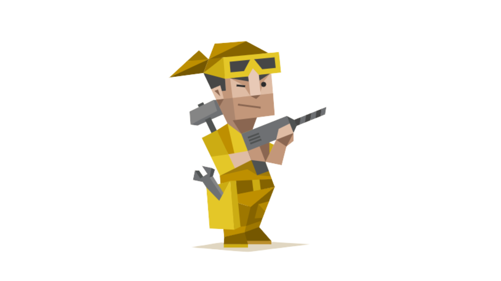
ISTP
Bold and practical experimenters, masters of all kinds of tools.g
The Virtouso
IntrovertedObservantThinkingProspecting
"Cool-headed problem solvers who love to explore how things work hands-on."
Strengths
Diligent and Observant
Handy and Resourceful
Independent
Spontaneous
Weaknesses
Unapologetic
Insensitive
Private and Reserved
Independent
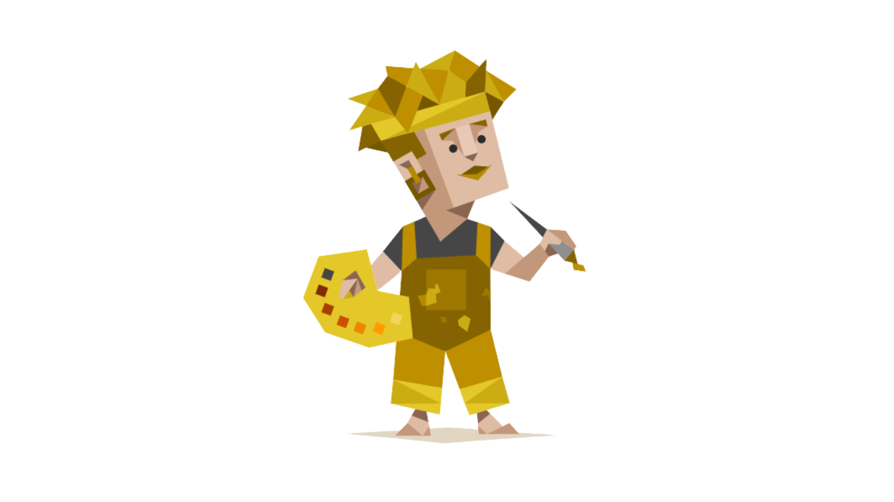
ISFP
Flexible and charming artists, always ready to explore and experience something new.
The Adventurer
IntrovertedObservantFeelingProspecting
"Gentle and spontaneous souls who express themselves through creativity and compassion."
Strengths
Charming
Sensitive to others
Imaginative
Passionate
Weaknesses
Easily Stressed
Unpredictable
Fluctuating Self-Esteem
Difficulty with Structure
ESTP
Smart, energetic and very perceptive people, who truly enjoy living on the edge.
The Entrepreneur
ExtravertedObservantThinkingProspecting
"Bold and action-oriented thrill-seekers who think fast and live faster."
Strengths
Bold
Original
Perceptive
Direct
Weaknesses
Insensitive
Impatient
Unstructure
Impulsive
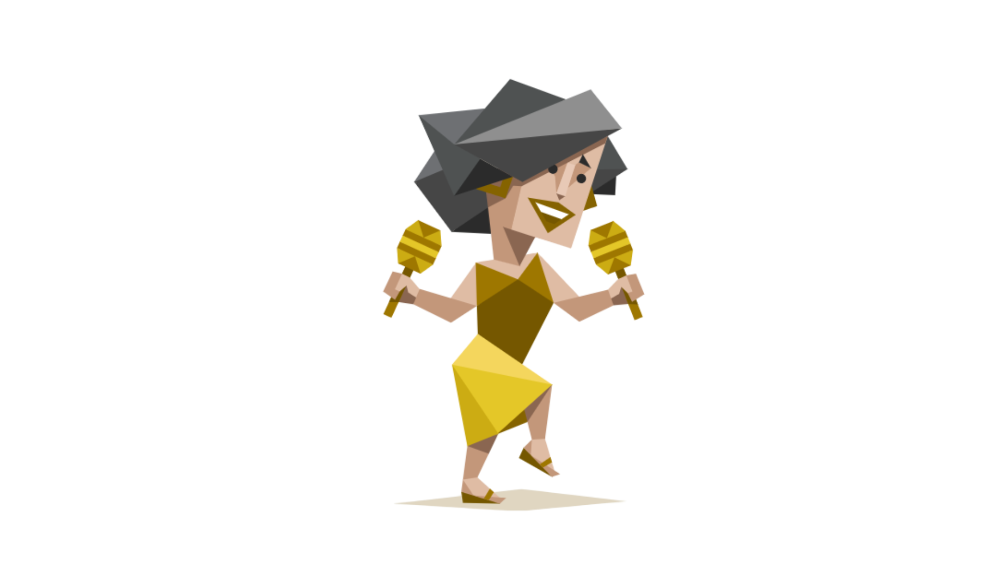
ESFP
Spontaneous, energetic and enthusiastic people – life is never boring around them.
The Entertainer
ExtravertedObservantFeelingProspecting
"Lively and warm-hearted charmers who bring energy and joy wherever they go."
Strengths
Bold
Original
Positive and Enthusiastic
Excellent People Skills
Weaknesses
Sensitive
Conflict-Averse
Easily Bored
Unfocused
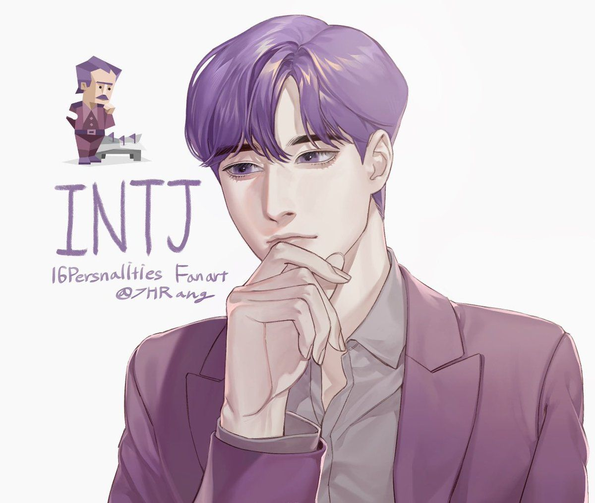
INTJ
The Architect
INTJs are strategic, future-focused thinkers who constantly seek understanding and optimization in every aspect of life. They’re often seen as visionaries—able to connect dots others don’t even notice. Their inner world is rich, structured, and full of long-term plans.
Mindset: INTJs are long-range planners with an intuitive grasp of patterns and systems. They often prioritize efficiency over tradition and thrive in environments where independent thought is valued.
Focus: With a deep hunger for knowledge and self-mastery, INTJs often immerse themselves in topics that challenge the intellect. They prefer quality over quantity in relationships and ideas.
Energy: Although private and reserved, INTJs can become intensely passionate about ideas and projects that align with their vision. They recharge in solitude but seek out people who match their intensity and depth.
INTJ-A vs INTJ-T
INTJ-A (Assertive): More self-assured, less affected by stress, and confident in decisions. They are likely to follow through with bold plans without second-guessing themselves.
INTJ-T (Turbulent): More self-critical, cautious, and focused on self-improvement. They tend to be more emotionally reactive but may grow significantly through introspection.
Regardless of type, INTJs often pursue mastery and depth. Their relentless curiosity and sharp minds make them valuable innovators, leaders, and thinkers.
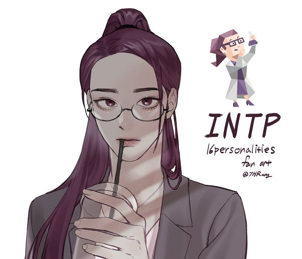
INTP
The Logician
INTPs are analytical, curious, and independent thinkers. They value knowledge and tend to enjoy deep intellectual exploration. INTPs are driven by a desire to understand the world around them and often pursue abstract and complex ideas.
Mindset: INTPs prioritize logic and objectivity. They are always questioning the world around them, seeking to break down complex systems and theories to understand them better.
Focus: INTPs focus on theories and abstract concepts. They thrive in environments that allow for intellectual independence and the exploration of new ideas without rigid constraints.
Energy: INTPs are introverted and recharge through solitude. They tend to be more focused on intellectual pursuits and may prefer spending time in their own world of ideas rather than engaging in social activities.
INTP-A vs INTP-T
INTP-A (Assertive): More self-confident and relaxed in stressful situations. They are more likely to trust their intellectual capabilities and stay calm when facing challenges.
INTP-T (Turbulent): More self-critical and perfectionistic. They tend to be more sensitive to stress and may question their decisions, but this introspection leads to personal growth and refinement of ideas.
INTPs are natural problem solvers who enjoy exploring complex theories and pushing the boundaries of intellectual understanding.
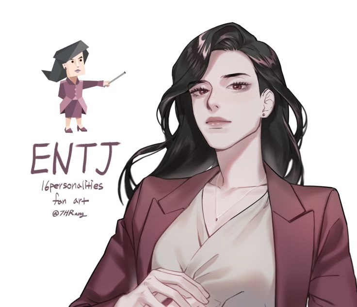
ENTJ
The Commander
ENTJs are assertive, strategic thinkers who are driven by ambition and a desire for efficiency. They are natural-born leaders who thrive in challenging environments and enjoy taking charge to organize and execute plans.
Mindset: ENTJs value logic and structure, and they approach problems with a strategic mindset. They excel at organizing and improving systems, preferring rationality over emotions.
Focus: They focus on achieving their goals and improving the systems they encounter. ENTJs are highly driven and often ambitious, striving to accomplish their long-term objectives.
Energy: ENTJs are highly energetic and assertive, always focused on their goals. They thrive in environments that challenge them intellectually and encourage leadership.
ENTJ-A vs ENTJ-T
ENTJ-A (Assertive): More self-assured and calm under pressure. They are decisive and confident in their actions, trusting their leadership abilities.
ENTJ-T (Turbulent): More self-critical and reactive to stress. They may second-guess their decisions but are often more sensitive to their surroundings and willing to improve themselves.
ENTJs are passionate leaders, always striving for success and improvement, with a natural inclination toward guiding others to accomplish collective goals.
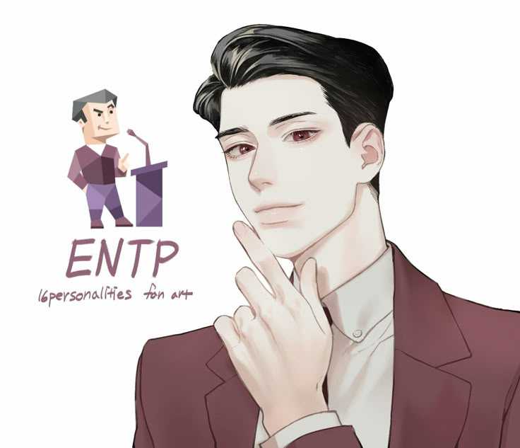
ENTP
The Debater
ENTPs are inventive, energetic, and outspoken individuals who enjoy challenging ideas and engaging in intellectual debates. Known for their quick wit and creativity, ENTPs love exploring new possibilities and can often find unconventional solutions to problems.
Mindset: ENTPs are idea-driven and enjoy questioning the status quo. They have a natural curiosity and an eagerness to engage in deep discussions about a wide range of topics.
Focus: ENTPs focus on possibilities and innovation. They enjoy exploring new ideas, testing theories, and finding creative solutions to problems in various fields.
Energy: ENTPs are highly energetic and thrive on social interactions. They recharge through intellectual engagement and are often seen as dynamic and enthusiastic in their pursuits.
ENTP-A vs ENTP-T
ENTP-A (Assertive): More confident and calm under pressure. They tend to trust their ability to adapt and innovate, taking challenges in stride without being overly affected by stress.
ENTP-T (Turbulent): More self-critical and reactive to stress. They may overthink decisions but often use this introspection to refine their ideas and solutions, striving to improve their work.
ENTPs are curious and inventive individuals who enjoy challenging the norm, seeking out new ideas and exploring innovative ways to solve problems.
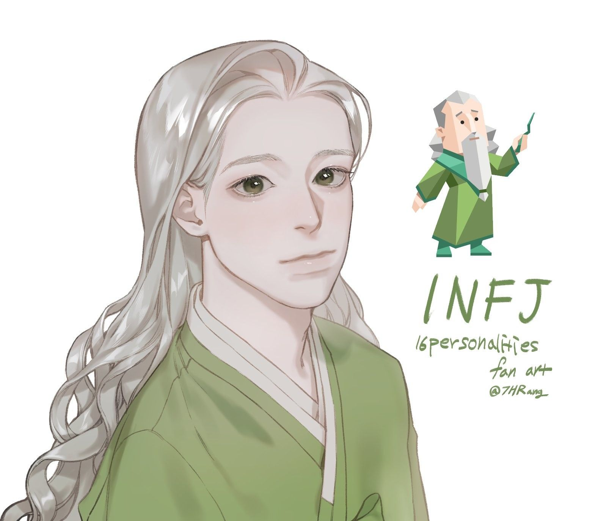
INFJ
The Advocate
INFJs are insightful, idealistic, and compassionate individuals who deeply care about the well-being of others. They have a rich inner world and are driven by a strong sense of purpose, often seeking to make a meaningful difference in the world.
Mindset: INFJs are intuitive and focused on the deeper meaning of life. They seek to understand people and the world around them, often working toward their personal vision of how things should be.
Focus: INFJs focus on personal growth, deep connections, and helping others. They often work towards causes that resonate with their values and seek to make the world a better place.
Energy: INFJs are introverted and recharge in solitude. They value quiet time to reflect on their thoughts and feelings but also enjoy meaningful interactions with close friends and family.
INFJ-A vs INFJ-T
INFJ-A (Assertive): More self-assured and less affected by stress. They maintain their ideals and focus on their purpose, feeling more confident in their ability to achieve their goals.
INFJ-T (Turbulent): More self-critical and sensitive to stress. They are more likely to question their decisions and may struggle with self-doubt, but this leads to deeper introspection and self-improvement.
INFJs are deep thinkers and empathetic individuals who are driven by their desire to make a positive impact on the world around them.
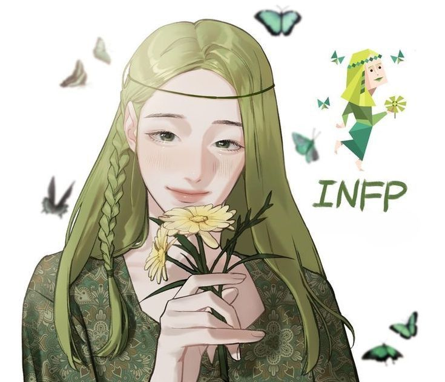
INFP
The Mediator
INFPs are idealistic, empathetic, and deeply passionate individuals. They are driven by their inner values and beliefs, often seeking to help others and make a difference in the world while staying true to themselves.
Mindset: INFPs are introspective and guided by their inner values. They focus on what is meaningful and authentic, seeking to understand their emotions and the emotions of others.
Focus: INFPs focus on personal growth, authenticity, and creativity. They often explore their interests deeply and enjoy expressing themselves in unique ways.
Energy: INFPs are introverted and recharge through solitude. They enjoy reflective time to connect with their thoughts and feelings and seek out meaningful connections with like-minded individuals.
INFP-A vs INFP-T
INFP-A (Assertive): More self-assured and less affected by stress. They feel confident in their values and decisions and are comfortable with their individuality.
INFP-T (Turbulent): More self-critical and emotionally sensitive. They often question their decisions and may struggle with self-doubt, but this introspection leads to personal growth and refinement.
INFPs are creative, compassionate, and driven by a strong sense of personal integrity, constantly seeking ways to live authentically and help others.
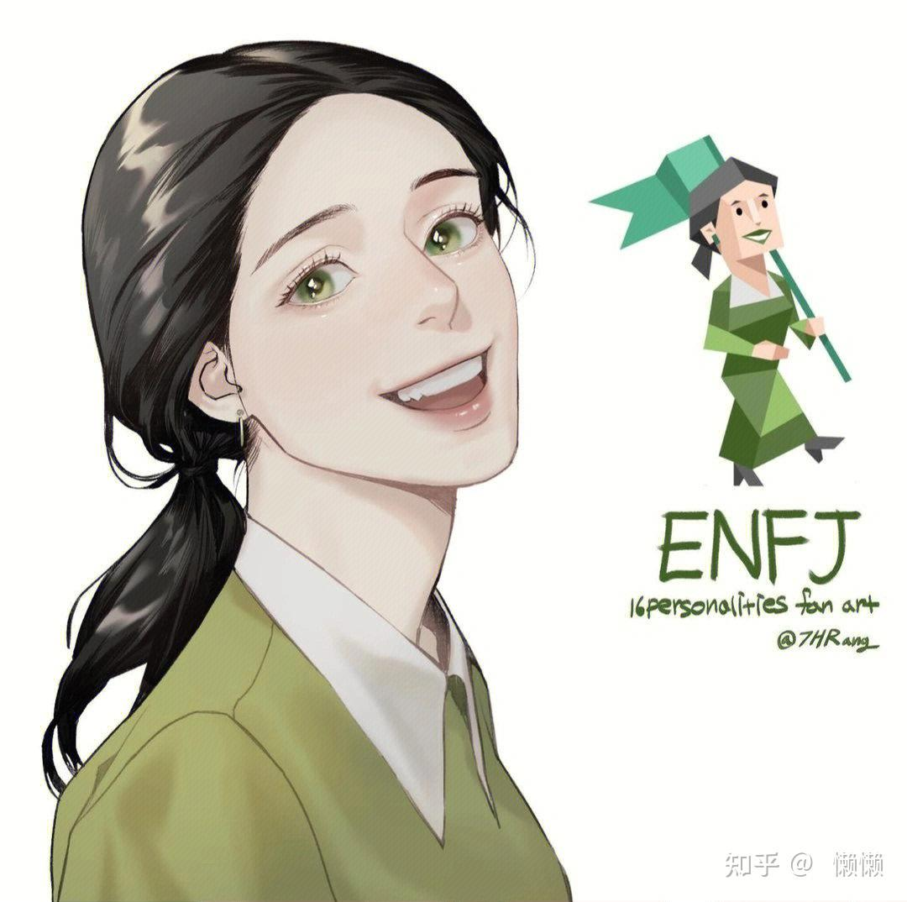
ENFJ
The Protagonist
ENFJs are charismatic, empathetic, and outgoing individuals who are driven by their desire to help others and lead by example. They are natural-born leaders with an ability to inspire and motivate those around them.
Mindset: ENFJs are focused on understanding people and guiding them toward their potential. They value harmony and seek to make positive changes in the world through collaboration.
Focus: ENFJs focus on others' well-being and personal development. They are often in tune with the needs of those around them and work to help people grow and succeed.
Energy: ENFJs are extroverted and thrive in social settings. They feel energized by interacting with others and are often the center of attention in group activities.
ENFJ-A vs ENFJ-T
ENFJ-A (Assertive): More self-assured and confident in their ability to lead and help others. They approach challenges with a sense of calm and trust in their abilities.
ENFJ-T (Turbulent): More self-critical and focused on self-improvement. They may struggle with stress and feel the weight of their responsibilities, but this introspection allows them to refine their approach to helping others.
ENFJs are empathetic, visionary leaders who thrive on helping others reach their full potential while making a meaningful impact in their communities.
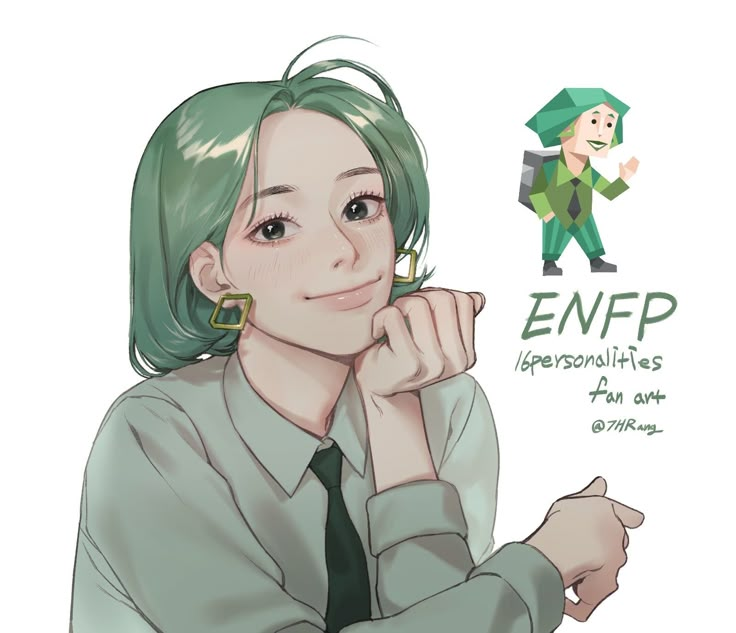
ENFP
The Campaigner
ENFPs are enthusiastic, creative, and curious individuals who love exploring new ideas and possibilities. They are passionate about their values and tend to be driven by a desire to inspire and encourage others to reach their full potential.
Mindset: ENFPs are imaginative and focus on possibilities. They thrive on exploring new ideas and understanding how things can be better, constantly questioning the status quo.
Focus: ENFPs focus on creative expression, personal growth, and meaningful connections. They enjoy engaging with people who share their enthusiasm for new ideas and possibilities.
Energy: ENFPs are extroverted and thrive in social settings. They are energized by interactions with others and seek out stimulating, meaningful conversations and experiences.
ENFP-A vs ENFP-T
ENFP-A (Assertive): More confident and self-assured. They tend to trust their abilities and feel comfortable navigating challenges, staying positive even in stressful situations.
ENFP-T (Turbulent): More self-critical and sensitive to stress. They often second-guess their decisions, but this tendency helps them refine their ideas and adapt to new situations.
ENFPs are creative and enthusiastic individuals who strive to inspire others and explore new ways to make the world a better, more exciting place.
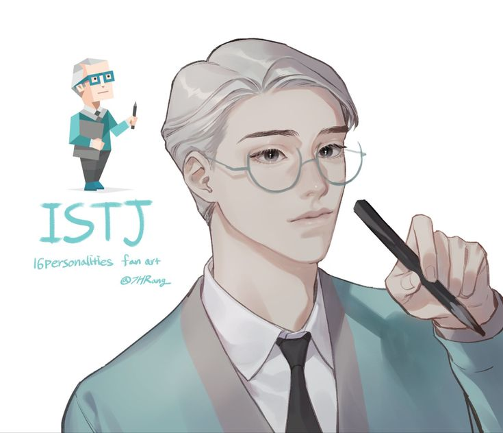
ISTJ
The Logistician
ISTJs are practical, dependable, and meticulous individuals who value structure, order, and tradition. They are highly detail-oriented and take great pride in fulfilling their responsibilities with precision and reliability.
Mindset: ISTJs value logic and responsibility. They have a strong sense of duty and prefer to follow established guidelines and procedures to ensure efficiency and accuracy.
Focus: ISTJs focus on facts, reliability, and long-term stability. They excel in environments that value structure and order and are driven by a need to maintain consistency and meet expectations.
Energy: As introverts, ISTJs prefer quiet, focused environments and recharge through solitary activities. They tend to be more reserved in social situations but value deep, meaningful connections.
ISTJ-A vs ISTJ-T
ISTJ-A (Assertive): More self-assured and confident in their decisions. They are less affected by stress and more likely to stick to their tried-and-true methods.
ISTJ-T (Turbulent): More self-critical and focused on self-improvement. They tend to question their decisions more, striving for perfection and becoming more stressed in uncertain situations.
ISTJs are dependable, structured individuals who take pride in their work and seek to ensure that things are done right and efficiently.
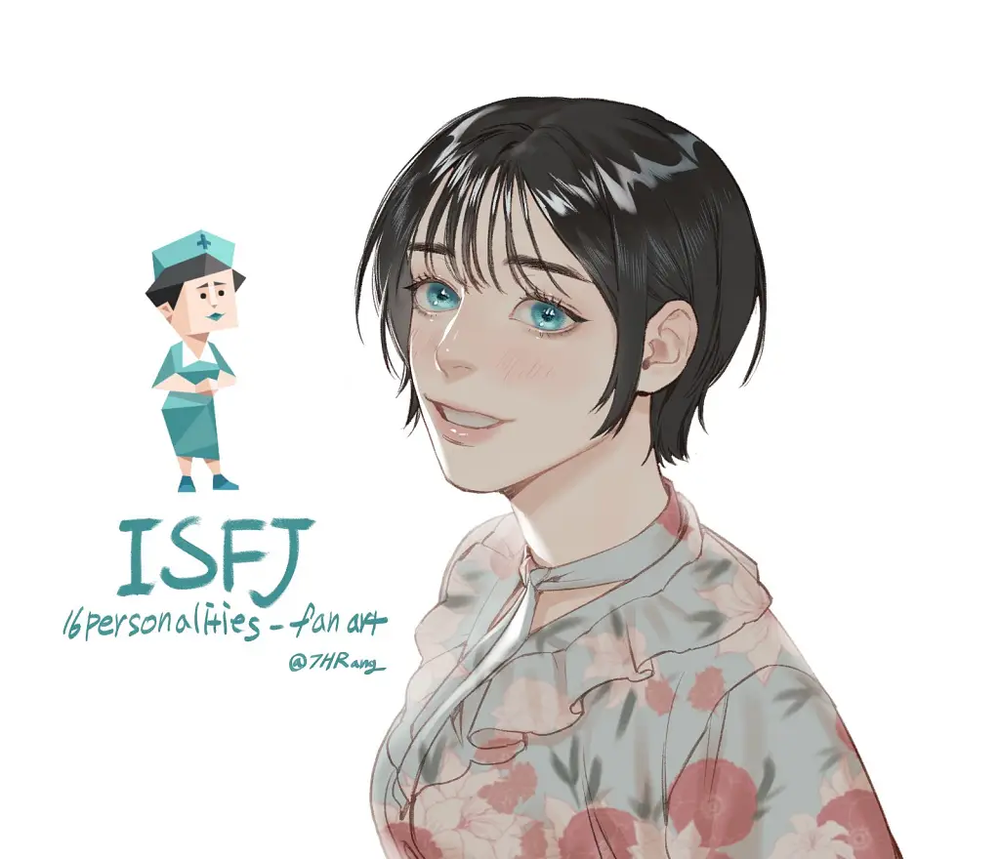
ISFJ
The Defender
ISFJs are warm, compassionate, and practical individuals who prioritize the well-being of others. They are deeply empathetic and work tirelessly to help those in need while maintaining a strong sense of duty and responsibility.
Mindset: ISFJs focus on the present and are sensitive to the needs of others. They value tradition and loyalty, often prioritizing the needs of others before their own.
Focus: ISFJs focus on creating harmony and helping those around them. They often work behind the scenes to provide support, ensuring that others are comfortable and well cared for.
Energy: As introverts, ISFJs recharge by spending time alone. While they enjoy helping others, they value their private space to reflect and gather energy for future endeavors.
ISFJ-A vs ISFJ-T
ISFJ-A (Assertive): More self-assured and confident in their ability to help others. They are less likely to be affected by stress and are comfortable with their decisions.
ISFJ-T (Turbulent): More self-critical and focused on self-improvement. They often question their ability to meet expectations but use this to refine their approach and care for others.
ISFJs are caring and dependable individuals who take pride in providing support to those around them, seeking to create a peaceful and nurturing environment.
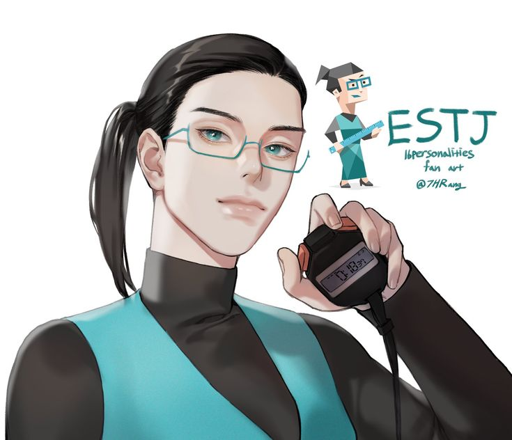
ESTJ
The Executive
ESTJs are logical, organized, and driven individuals who excel at managing tasks and people. They are natural leaders who prioritize efficiency, structure, and responsibility in both their professional and personal lives.
Mindset: ESTJs value tradition, order, and rules. They are focused on ensuring systems run smoothly and efficiently and are committed to maintaining structure and accountability.
Focus: ESTJs focus on organizing resources, managing teams, and executing tasks with precision. They excel in environments that require clear goals and a structured approach.
Energy: As extroverts, ESTJs enjoy interacting with others and are energized by social activities. They tend to take charge in group settings and lead others toward achieving common goals.
ESTJ-A vs ESTJ-T
ESTJ-A (Assertive): More self-assured and confident in their decision-making. They are less affected by stress and more determined to maintain control and efficiency.
ESTJ-T (Turbulent): More self-critical and focused on refining their leadership skills. They may question their ability to succeed under pressure but use this introspection to improve their approach to tasks.
ESTJs are assertive, organized leaders who focus on achieving their goals efficiently while ensuring that everyone stays on track and follows the rules.
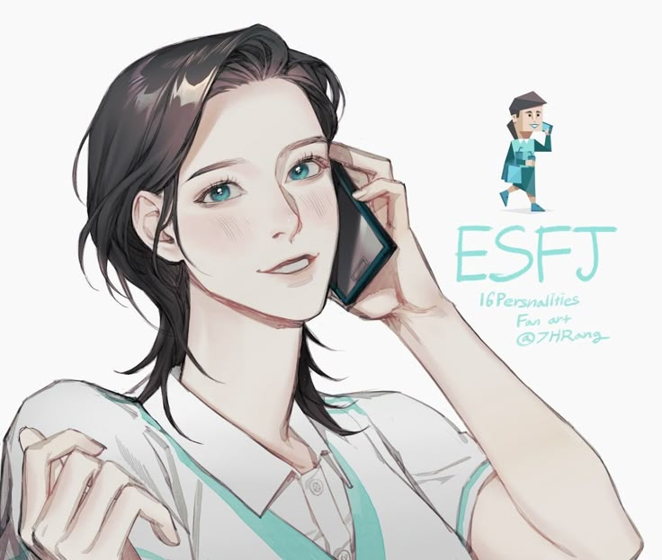
ESFJ
The Consul
ESFJs are warm, social, and nurturing individuals who thrive in group settings and enjoy supporting others. They are highly empathetic and often take on the role of caregiver, ensuring that everyone feels valued and cared for.
Mindset: ESFJs are highly attuned to the needs of others and seek to maintain harmony in their relationships. They are pragmatic and focus on practical solutions that benefit everyone.
Focus: ESFJs focus on creating a supportive and positive environment. They often take responsibility for organizing events and ensuring that everyone feels included and comfortable.
Energy: As extroverts, ESFJs enjoy interacting with others and are energized by social activities. They seek to build strong, supportive relationships and enjoy helping others feel connected.
ESFJ-A vs ESFJ-T
ESFJ-A (Assertive): More self-assured and confident in their ability to support and connect with others. They are less likely to be affected by stress and maintain a positive attitude in social situations.
ESFJ-T (Turbulent): More self-critical and focused on refining their social skills. They
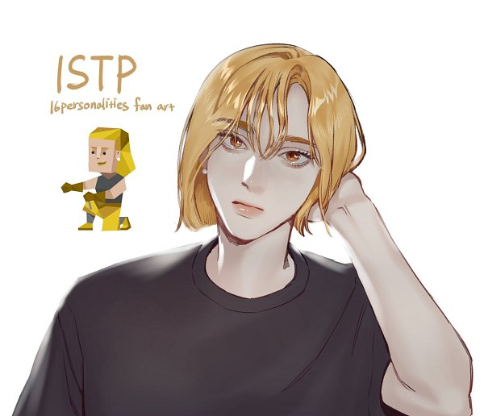
ISTP
The Virtuoso
ISTPs are analytical, independent, and action-oriented individuals who excel at solving problems and figuring out how things work. They have a hands-on approach to life and enjoy experimenting with new ideas and tools.
Mindset: ISTPs are logical and objective thinkers, often focusing on immediate problems rather than long-term plans. They value autonomy and thrive when given the freedom to explore and solve challenges on their own terms.
Focus: ISTPs are driven by curiosity and are constantly looking for practical solutions to complex problems. They enjoy working with their hands and are often interested in technology, engineering, or mechanics.
Energy: As introverts, ISTPs tend to recharge by spending time alone or engaging in solitary activities. They enjoy deep focus and often become immersed in projects that require precision and skill.
ISTP-A vs ISTP-T
ISTP-A (Assertive): More self-assured and confident in their ability to handle challenges. They are less affected by stress and tend to remain calm under pressure.
ISTP-T (Turbulent): More self-critical and focused on refining their skills. They may question their abilities but use this to drive self-improvement and mastery of their craft.
ISTPs are pragmatic, hands-on individuals who love solving problems and taking action. They are highly adaptable and thrive in environments that require quick thinking and practical solutions.
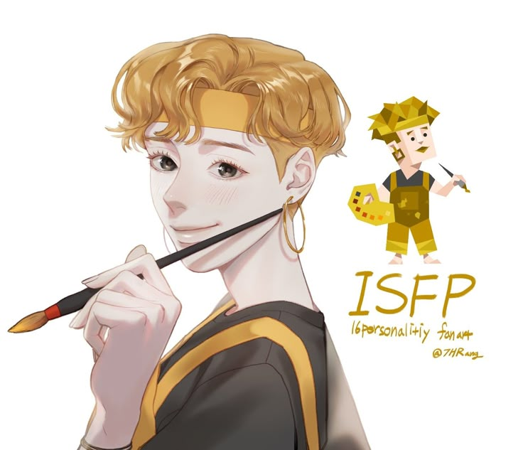
ISFP
The Adventurer
ISFPs are creative, artistic, and gentle individuals who enjoy exploring the world through sensory experiences. They are spontaneous and adaptable, often seeking beauty in nature, art, and human connection.
Mindset: ISFPs are deeply in tune with their feelings and values, often following their intuition and personal sense of right and wrong. They appreciate living in the moment and experiencing life as it comes.
Focus: ISFPs focus on creativity and personal expression. They enjoy engaging in artistic endeavors or exploring new experiences that allow them to express themselves freely and authentically.
Energy: As introverts, ISFPs recharge by spending time in quiet, reflective environments. They value peace and calm and often prefer to avoid conflict or large social gatherings.
ISFP-A vs ISFP-T
ISFP-A (Assertive): More self-assured and confident in their artistic abilities. They are less affected by stress and tend to stay true to their personal values without second-guessing themselves.
ISFP-T (Turbulent): More self-critical and sensitive to feedback. They are constantly refining their craft and seeking ways to improve, often questioning their choices in the process.
ISFPs are deeply creative individuals who seek beauty in life and have a strong desire to live authentically. They are spontaneous and often focus on creating and experiencing art, nature, and personal expression.
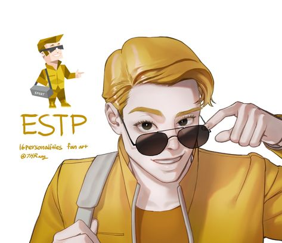
ESTP
The Entrepreneur
ESTPs are energetic, outgoing, and action-oriented individuals who thrive on excitement and challenges. They are natural problem-solvers and enjoy taking risks, often finding creative solutions to immediate issues.
Mindset: ESTPs are focused on the here-and-now and are skilled at navigating fast-paced environments. They are highly adaptable, making quick decisions based on real-time information.
Focus: ESTPs focus on practical solutions and are often drawn to exciting, hands-on activities. They thrive in situations that require quick thinking, action, and adaptability.
Energy: As extroverts, ESTPs enjoy being around people and are energized by social interaction. They thrive in dynamic, fast-paced environments where they can engage in active problem-solving and decision-making.
ESTP-A vs ESTP-T
ESTP-A (Assertive): More self-assured and confident in their decision-making. They are less affected by stress and are quick to act without second-guessing themselves.
ESTP-T (Turbulent): More self-critical and focused on improving their adaptability. They may be more reactive to stress but use it to refine their decision-making and problem-solving skills.
ESTPs are action-oriented and thrive in situations that require them to think on their feet. They are risk-takers and problem-solvers, always ready to take on new challenges.
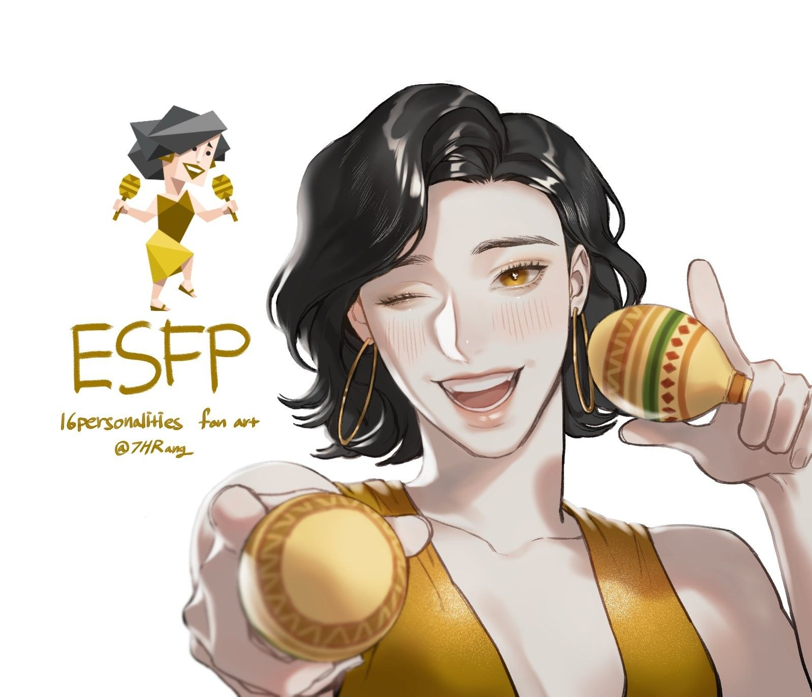
ESFP
The Entertainer
ESFPs are spontaneous, energetic, and social individuals who love living in the moment and making connections with others. They are the life of the party and enjoy creating excitement and fun in any situation.
Mindset: ESFPs are highly in tune with their surroundings and enjoy experiencing life through their senses. They are motivated by fun, excitement, and the joy of connecting with others.
Focus: ESFPs focus on enjoying the present and living in the moment. They are highly adaptable and love engaging in activities that bring joy, laughter, and social interaction.
Energy: As extroverts, ESFPs are energized by socializing and engaging with others. They love being in the spotlight and seek out environments where they can express themselves freely and interact with others.
ESFP-A vs ESFP-T
ESFP-A (Assertive): More self-assured and confident in their ability to engage with others. They are less affected by stress and tend to embrace challenges with optimism.
ESFP-T (Turbulent): More self-critical and sensitive to feedback. They may be more reactive to stress but use it to refine their social skills and self-expression.
ESFPs are spontaneous and energetic individuals who love to entertain and bring joy to others. They thrive in social environments and are constantly looking for new ways to experience life to the fullest.